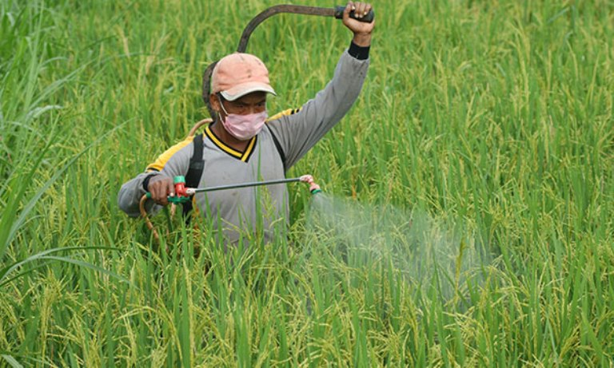
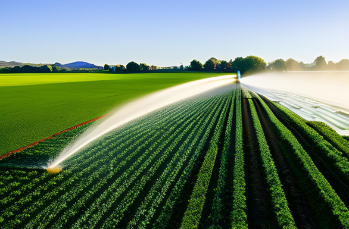

Panduan Bertani

Panduan Dasar Bertani
Pelajari teknik dasar persiapan lahan, pemilihan bibit, dan perawatan tanaman.
Baca Selengkapnya

Pengendalian Hama
Tips dan trik mengatasi hama tanaman secara organik dan kimia yang aman.
Baca Selengkapnya

Teknik Pengairan Modern
Sistem irigasi efisien dan manajemen air untuk hasil optimal.
Baca Selengkapnya